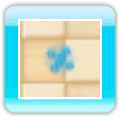
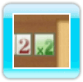
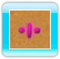
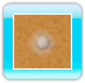

● ○（まる）で遊ぶ まるは左右どちらかに転がっており、を押すと転がる方向が変わります。まるを敵にぶつけて倒し、一定数の敵を倒すとステージクリアです。なお、倒した敵がほかの敵に当たっても倒せます。
ゲームオーバーの条件
・敵がフィールドの外側に出てしまう
● ／（ぼう）で遊ぶ コアを中心に回転するぼうを、敵やブロックに当てると倒したり壊したりできます。このとき、倒した敵や壊したブロックがほかの敵に当たっても倒すことができます。 を押している間はぼうの回転する勢いを使って移動できるので、上の方に登らせていき、一定の距離を進めるとステージクリアです。 ステージクリアまでにかかった時間が短いほど、次のステージ以降で敵を倒したときにもらえる敵一体あたりの得点（敵単価）が多くなります。
一定時間同じ場所にとどまっていると、強い敵が出現するので気をつけてください。
・コアが敵かブロックに触れる
● □（しかく）で遊ぶ を押した方向にしかくが移動します。しかくの後ろを炎がついてくるので、ブロックに炎を接触させて燃やしましょう。また、爆弾に炎がつくと爆発し、周囲を燃やすことができます。上の方に一定の距離を進めると、ステージクリアです。なお、しかくはブロックや炎を突き抜けて移動することができません。
・しかくの移動できる場所がなくなる
・ブロックや燃えているブロックが画面の一番下にくる
・しかくが爆弾の爆発に巻き込まれる
アイテムについて
ゲームで遊んでいるときに、プレイヤーを有利にしてくれるさまざまなアイテムが登場します。
● 倍率アイテム 3つのゲームで遊んでいるときに、倍率アイテムが出現することがあります。自機（操作中のもの）で触れると取ることができ、スコア表示右側の倍率が増えて効率よくスコアアップできます。なお、○（まる）では倒した敵が倍率アイテムに当たったとき、／（ぼう）では倍率アイテムを取り逃したとき、□（しかく）では倍率アイテムを取り逃したときと、倍率アイテムが爆弾の爆発に巻き込まれたときに、倍率が1倍に戻ってしまいます。
● 無敵アイテム ／（ぼう）で遊んでいるときに、無敵アイテムが出現することがあります。 コアの部分で触れると取ることができ、一定時間ぼうが回転し続けて無敵になります。
● 分身アイテム  ／（ぼう）で遊んでいるときに、分身アイテムが出現することがあります。 ぼうの部分で触れるとはじくことができ、画面内を移動して敵やブロックを攻撃したり、倍率アイテムを取ることができます。一定回数、敵やブロックを攻撃すると消滅します。

 を押した方向にしかくが移動します。しかくの後ろを炎がついてくるので、ブロックに炎を接触させて燃やしましょう。また、爆弾に炎がつくと爆発し、周囲を燃やすことができます。上の方に一定の距離を進めると、ステージクリアです。なお、しかくはブロックや炎を突き抜けて移動することができません。
を押した方向にしかくが移動します。しかくの後ろを炎がついてくるので、ブロックに炎を接触させて燃やしましょう。また、爆弾に炎がつくと爆発し、周囲を燃やすことができます。上の方に一定の距離を進めると、ステージクリアです。なお、しかくはブロックや炎を突き抜けて移動することができません。